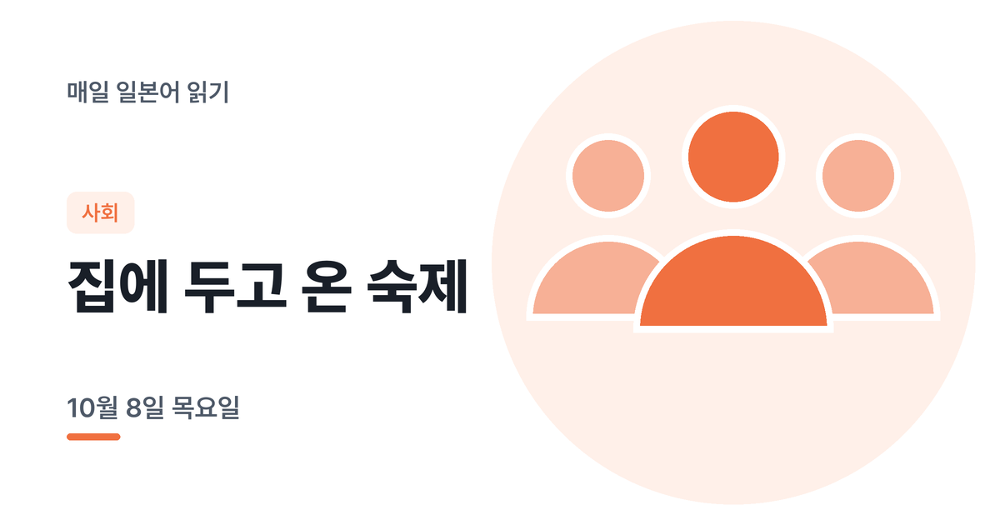

10월 8일 목요일
오늘은 도서관 대화 이야기예요
5문장
N5 위주
N4 1문장
약 3분
매일 아침 새로 올라오는 JLPT N4~N5 일본어 읽기예요. 듣고, 해석하고, AI에게 피드백을 받아 보세요. 메일로 받기다른 언어
STEP 1
오늘의 지문
今日、図書館で友だちの田中さんに会いました。
田中さんは「どんな本を探しているの？」と聞きました。
わたしは「来週の発表のために秋の文化について調べている」と言いました。N4
田中さんが面白い本を紹介してくれました。
二人で1時間ほど一緒に勉強しました。
문장 번호를 누르면 그 문장만 들을 수 있어요. 음성: VOICEVOX:冥鳴ひまり
특정 기사를 바탕으로 하지 않은 학습용 글입니다.
지문, 내 해석, 피드백 요청이 함께 복사돼요. ChatGPT나 Claude 같은 AI 채팅에 붙여넣으면 문장별로 고쳐 줘요.
STEP 2
주요 단어
図書館도서관
探す찾다
調べる조사하다
発表발표
紹介する소개하다
文化문화
STEP 3
오늘의 체크 포인트
ために: '~를 위해'
3번 来週の発表のために에서 のために는 '~를 위해'라는 목적을 나타내요. 명사 + のために로 씁니다.
〜してくれました: '~해 줬습니다'
4번 紹介してくれました는 상대방이 나를 위해 해준 행동에 쓰는 표현이에요. 고마움이 담겨 있습니다.
STEP 4
먼저 해석해보세요
모르는 단어가 나와도 문장을 버리지 말고, 아는 부분만이라도 지문 아래 '내 해석' 칸에 적어 보세요. 다 쓰면 'AI 피드백 요청문 복사'를 눌러 평소 쓰는 AI 채팅(ChatGPT, Claude 등)에 붙여넣으세요. 어디를 잘 읽었고 어디를 놓쳤는지 문장별로 알려 줘요.
모범 해석해석을 마친 뒤에 펼쳐 보세요
1
오늘 도서관에서 친구 타나카 씨를 만났습니다.
2
타나카 씨는 '어떤 책을 찾고 있어?'라고 물었습니다.
3
저는 '다음 주 발표를 위해 가을 문화에 대해 조사하고 있어'라고 말했습니다.
4
타나카 씨가 재미있는 책을 소개해 줬습니다.
5
둘이서 1시간 정도 함께 공부했습니다.
한 단계 위 어휘선택 사항 · 눈에 익혀두는 용도예요
閲覧する
열람하다
図書館で雑誌を閲覧しました。
貸し出し
대출 · 返却(반납)의 반대말
この本は貸し出し中です。
資料
자료
発表に使う資料を集めました。
参考にする
참고하다
この本を参考にして発表をつくります。
集中する
집중하다
図書館は集中しやすい場所です。
要約する
요약하다 · 翻訳(번역)와 혼동 주의
読んだ本を要約してノートに書きました。
매일 아침 일본어 지문 받기
새 일본어 지문이 올라오면 아침에 메일로 보내 드려요.
지금은 이메일 주소 하나로 한 언어만 구독할 수 있어요. 두 언어를 받으려면 서로 다른 이메일로 구독해 주세요.
구독하면 영문 확인 메일(Confirm your subscription)이 가요. 메일 속 버튼을 눌러야 구독이 끝나요. 메일이 안 보이면 스팸함도 확인해 주세요.
이메일은 뉴스레터 발송에만 쓰이고, 언제든 메일 하단에서 수신거부할 수 있어요.